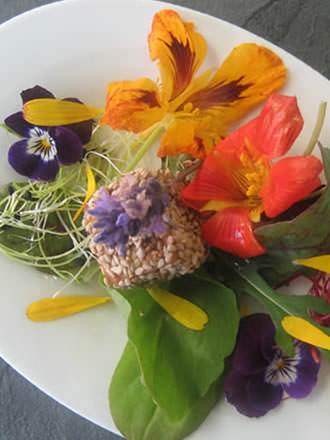
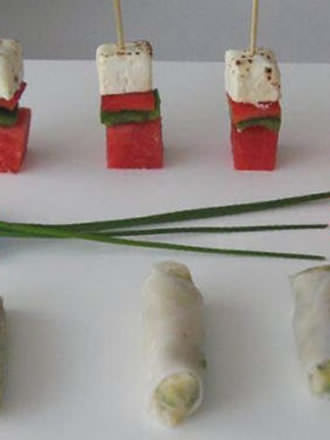
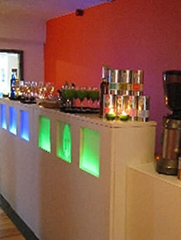
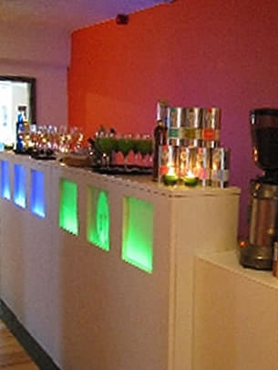
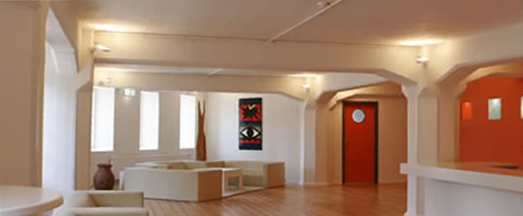
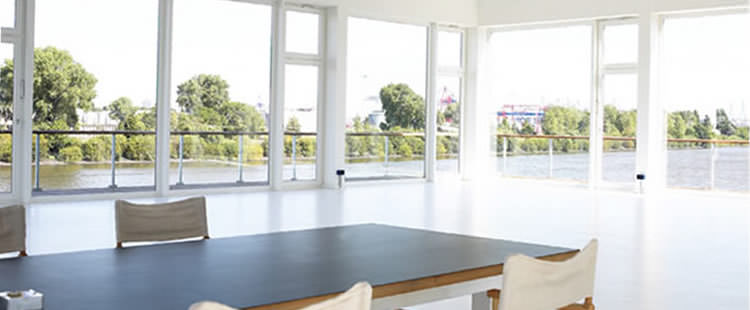

Als ich mir vor über 10 Jahren noch in fremden Küchen am Herd die Finger verbrannte, kam mir die Idee einen Cateringservice aufzubauen mit einem leidenschaftlichen Team und dem Anspruch veraltete Küchenstrukturen und -hierarchien bewusst zu durchbrechen. PANEM et SALIS - der Mut, Neues zu verwirklichen, aber auch die klassische Kochkunst nicht in Vergessenheit geraten zu lassen, wurde für uns zu einer gelungenen Gratwanderung.
Von unserem wachsenden Hamburger Standort aus, blicke ich heute auf eine Erfahrung aus über 7000 Veranstaltungen und mehr als 500.000 bewirteten Gästen zurück. Auf klassische Kochkunst, experimentelle Küche und molekulare Speisen, bei denen wir stets höchsten Wert auf Qualität und echte Handarbeit gelegt haben.
Nach über 10 erfolgreichen Jahren also möchte ich mich bei meinen Kunden, Mitstreitern, langjährigen Begleitern, Kollegen, Mitarbeiterinnen und Mitarbeitern bedanken, die es möglich gemacht haben, dass Panem et Salis erwachsen geworden ist und weiterhin innovativ ist ohne stehen zu bleiben. Danke an Sie und Dank an Euch, Jungs und Mädels!
Ihr / Euer Florian Koch
Ob Sie nun Gala-Dinner, Fingerfood, Fusion-, Soul-, Crossover-Küche oder die ganz ordinäre Currywurst mögen: Wir bieten authentische Speisen aus aller Welt und legen großen Wert auf das Food-Design. Kreativ, jung, frisch, aufregend und immer mit einer außergewöhnlichen, individuellen Note.
-
Ob 2-3 oder 12 Gänge - das Gala-Dinner, umfangreiche Logistik und das perfekte Zusammenspiel zwischen Küche und Service. Timing auf den Punkt, um jedem Gast gleichzeitig sein kulinarischen Leckerbissen zu servieren. Lehnen Sie Sich zurück und genießen Sie einfach.
-
Hinter den Kulissen wird schwungvoll gearbeitet und konzentriert komponiert...
-
Nehmen Sie Platz...
-
Und genießen Sie...
-
Geschichtete Crepes an Waldbeerkompott mit Orchideen.
-
Gefüllte Zucchiniblüte an Blattsalaten.
-
Frische und hochwertige Zutaten sind unsere Basis für Ihre Speisen.
-
Es kann gestartet werden. Von 3-20 Gängen erstellen wir jedes Menü ganz nach Ihren Wünschen.
-
Es ist angerichtet.
-
-
Schauen Sie den Köchen bei der Arbeit zu und ergattern Sie beim Live-Cooking das ein oder andere Rezept für Zuhause. Vom authentischen Pasta-Buffet, über die frisch zubereitete asiatische Wok-Kochkunst bis zum besonderen Erlebnis der molekularen Küche reicht unser Repertorie vor Ort.
-
Schöner kann ein Tag fast nicht beginnen...Brunchbuffets mit allem was das Herz am Morgen begehrt.
-
Authentische Speisen frisch gefertigt am Buffet... Afrikanischer Abend während des German Sailing Grand Prix.
-
all' Arrabiata...al Pesto...nero di seppia...frische Pasta, live zubereitet ganz nach den Wünschen Ihrer Gäste.
-
...Knackig und frisch, pikant oder mild...
-
aber immer individuell nach Ihrem Geschmack zusammengestellt.Unsere Wrap Sation...
-
Terrine von der Seezunge mit Pistazien und mediterranen Kräutern...Klassiker auf schwarzem Acryl.
-
Get together...Lunchpause...Zurückhaltend kleine Snacks immer mit dem besonderen Extra...
-
Taleggio...Cashel blue...Pre joseph oder Emmentaler...Mit Quittensenf, Rotwein Gelee oder pur...
-
Nicht alles einfach nur Käse.
-
Für den festlichen Anlass... Kleine Portionen ins rechte Licht gerückt...
-
...knusprig karamellig lecker.
-
nicht einfach nur eine Pyramide von Creme brule...
-
Unsere Livestation... für jede Größe... jeden Anlass und jeden Gechmack...
-
Lässt keine Wünsche offen.
-
Nach dem Event ist vor dem Event... Die Ruhe nach dem Sturm...
-
Es muss nicht immer klassisch sein... letzte Spuren von mehr als 2000 Gästen werden beseitigt...
-
Ein Messebuffet kann auch aufregend sein...
-
Dezent und Edel... Für Ihr Buffet verwenden wir stets frische und erlesene Zutaten...
-
-
Klein, schnell, für zwischendurch und trotzdem ein Feuerwerk im Gaumen: Das Fingerfood.Von der kleinen Konferenz bis zum Großevent – diese Formen der Bewirtungermöglichen den Gästen sich frei zu bewegen und ihre Speisen im Stehen zu genießen. Lassen Sie sich von unseren immer neuen Anrichtevarianten überraschen – ob Flying Fingerfood, Forkfood oder das 15-gängige Premium-Dinner serviert im flying Service, oder auf beleuchteten Foodcubes in der Location. Da dürfen Sie gern auch öfter zugreifen!
-
Kleine Köstlichkeiten im Porzellanschälchen, im Weckglas oder am Bambusspieß...
-
Passend zu jedem Anlass...Von der Konferenz mit mediterranen Spezialitäten...
-
bis zur Weihnachtsfeier mit Gänsebrust, Rotweinschalotte und Bratapfel...
-
Medaillons vom Rosa Thunfisch auf Vanill-Gurkensalat...Ein Hauch von Exotik.
-
Lolliparade...
-
Parmaschinken mit Melone, Schwertfisch mit Passionsfrucht, Frischkäse mit Thymianpesto...Wraps mit dem besonderen Etwas.
-
Geheimnisvoll verführerisch...Mousse von Valrhona Schokolade mit Tonkabohnenkrokant.
-
Farbiges...Wir fertigen Ihre individuellen Fingerfoodcreationen auch nach farblichen Wünschen...
-
Klassische Canapes vom Roastbeefröllchen & Rauchlachsröschen.
-
Frisch und knackig: Mediterranes Gemüse am Spieß...
-
Kleine Jacobsmuschel mit Dillsalz auf Gurkensalat...
-

angerischtet auf weißem Acryl...
-
oder auf edlen Holztabletts...
-
von der kleinen Porzellancocktailplatte...
-
oder einfach in der serviette... nicht einfach nur lecker, sondern yummi.
-
Gänseleberterrine mit Rauchaal auf hausgebackenem Brot...
-

gebratener Würfel von Rauchtofu im Sesammantel auf Salat von essbaren Blüten.
-
Sesampraline mit Pasta und Creme von Orange & Hokaidokürbis.
-
Schafskäsewürfel aus dem Feuer mit minzmarinierter Wassermelone.
-
Lasagne von der Flugmango mit Zegenfrischkäse und Pfefferkaramell.
-
Medaillon vom Loup de mer mit Kokosschaum.
-
Schafskäse mit Aprikosenconfit im Papier gebacken.
-
Streifen vom Saibling auf knackigem Wok-Gemüse mit rosa Steinsalz.
-
Pochierte Jacobsmuschel mit Rote Bete Risotto in der Waffel.
-
Gabelbissen im Weckglas oder in der kleinen Asia-Box.
-
Strudel vom Pengasius auf Salat von Wakame Alge und dunklem Balsamico.
-
Als Empfang oder für eine Flying Bewirtung... Gabelbissen auf kleinen Cocktailtellerchen.
-
Pastetchen, Canapes oder kleine Plätzchen von Quinoa auf Glas...
-
oder Acryl... immer passend zu ihrem Anlass angerichtet...
-
Spaghetti von Panna Cotta mit Himbeergelee und frischen Waldfrüchten.
-
Gebratene Garnele auf knackigem Mango-Salat mit Steinsalz und soja-Nussvinaigrette aus Pipette.
-
Frischkäsecrouton mit gebratenem Scampi.
-
Milchbonbonmit Hibiscusblüte und weißer Schokolade...
-
Praline von der Wachtelbrust mit Morcheln und Zitronenthymian.
-
Medaillons vom Wildschweinfilet auf pikanten Waldfrüchten.
-

manchmal ist weniger mehr...
-
Fingerfood Variationen serviert auf weißem Acryl.
-


Erlesene Weine und Wassersorten aus aller Welt, aufregende Cocktails, spritzige Longdrinks, erfrischende Smoothies, fruchtige Säfte aus biologischer Herstellung, Digestives, umfangreiche Espressobewirtung, Kaffees und Tees runden die Speisen perfekt ab. Wir stellen Ihnen Beverages aus den besten und erlesensten Zutaten immer individuell zusammen. Gerne machen wir Ihnen auch Vorschläge für professionelle Cocktailbewirtung – inklusive Flair-Bar-Tender.
-
Wir bieten Ihnen eine große Auswahl an hochwertigen Weinen, Bieren, Sekt, Prosecco und Champagner und entwerfen auf Wunsch individuelle Vorschläge für extravagante Cocktails und Empfangsdrinks, passend zu Ihrem Event. Ob Sie ein bestimmtes Bier aus einer besonderen Region der Welt bevorzugen - aus der Flasche oder frisch gezapft, ob geschüttelt oder gerührt - wir besorgen Ihr Lieblingsgetränk für Ihr Event, ebenso wie ausgewählte Weine von deutschen Winzern und aus aller Welt.
-
Umfangreiche Auswahl an Weinen & Cocktails professionell serviert...
-
Prosecco, Sekt oder Champagner. Beim Empfang beginnt die Veranstaltung.
-
Passend zu Ihrer Speisenauswahl schlagen wir gern nationale und internationale Weine vor...
-
Frische Früchte runden unser Cocktailangebot ab...
-
-
Saftladen – für uns ein Kompliment! Wir führen eine Fülle an Säften und Limonaden, auch aus biologischer Herstellung! Wie wäre es zum Beispiel mit unserer hausgemachten Ingwerlimonade? Natürlich bieten wir Ihnen auch die neuesten Trendgetränke und Premiumwasser aus aller Welt mit dem gewissen "Bling, bling"!
-
Frisch gepresste Säfte und Smoothies.
-
-
Feinster Espresso für Gourmets, Wiener Melange, Latte Macchiato oder erlesener Filterkaffee – bei uns haben Sie die Auswahl zwischen vielen verschiedenen Kaffee-Spezialitäten für Ihre professionelle Kaffee- und Espressobewirtung. Ausgesuchte Tees aus aller Welt sowie Brände und Spirituosen ergänzen das Angebot.
-

veredelt mit unserer...
-
...hauseigenen Espressomischung
-
Flavors nach Ihrem Geschmack...
-
Teespezialitäten frisch aufgebrüht...
-



Ob Sie in der Telefonzelle feiern wollen oder in der Flugzeughalle des A 380? In Ihren eigenen 4 Wänden oder in einer von vielen Locations: Von klein und fein bis groß und repräsentativ, von Lagerhalle bis Loft, von Fabriketage bis Fotostudio oder von Schloss bis Museum? Ob klassisches Dinner, VIP-Empfang, Gala, Großveranstaltung, Firmenevents, Hochzeit oder Taufe - in Hamburg oder deutschlandweit? Wir finden Ihre Location.
-
Pur, aber edel. Für bis zu 200 Gäste.
-
Auf 2 Etagen, ausgestattet mit modernen Multimediakomponenten...
-
Die Fabrik der Künste.
-
Mit Blick auf die Elbe. Für 50 bis 200 Gäste. Für die Hochzeit oder die Firmenfeier...
-
Rustikaler Gala Abend. Die Haferscheune von Schloss Blumendorf...
-
Zelte in allen Größen und passend zu jedem Anlass...
-
Loungig und pur...
-
Edel und wandelbar...
-
Das Playrent Fotostudio im Herzen des Schanzenviertels...
-
Ob Sie Ihre Gäste im Außenbereich empfangen wollen...
-
in der loungigen Bar...
-
oder im großen Saal des Edelfettwerks fürstlich speisen wollen. Diese Location bietet Platz für jede Art von Veranstaltungen...
-
Den Fleet auf der einen Seite ... und die Hafencity auf der anderen...
-

Das Dialog im Dunkeln bietet Platz für Ihre Veranstaltung...
-

Vor den Toren Hamburgs und ein faszinierender Blick auf die Elbe...
-
auch vom Außenbereich.
-
Das Fleet 3 für Veranstaltungen bis zu 80 Personen...
Um unsere Speisen ins perfekte Licht zu rücken, haben wir unser eigenes Bar- und Buffetmobiliar entworfen. Weiße, beleuchtete und colorierbare Acrylflächen und Live-Elemente mit einsetzbaren Woks sorgen zum Beispiel für spannendes Live-Cooking. Wir kümmern uns auch um stilvolle Raum-beleuchtung, Dekoration, Floristik, Feuerwerke, Veranstaltungstechnik oder buchen Künstler/Künstlerinnen für die abendliche Unterhaltung Ihrer Gäste.
-
Die Panem et Salis Foodcubes. Beleuchtbare Elemente.
-
...für Speisen, Getränke und mehr...
-
für jeden Anlass. Für jede Größe...
-
Die hauseigene Barserie ist in allen Farben beleuchtbar und setzt auf Wunsch auch Ihr Logo in Szene....
-
Selbstverständlich auch in Orange..
-
Dekoelemente von extravagant - modern...
-
über ausgefallen mit dem eisigen Hauch...
-
bis zu klassisch schlicht. Wir liefern die passenenden Ideen für Ihr Event.
-
Dezent aber edel. Blumenschmuck für Stehtische...
-
oder den festlichen Banketttisch...
-
Ob Reiterhalle oder Scheune ... Unsere Elemente lassen sich in jedem Raum platzieren...
-
Ihr Logo zu Anbeissen...
-
Pasta, asiatische Wok-Buffets oder Hamburger Pannfisch. Die Livestation bietet Platz zum Schwärmen.
-
Nah am Wasser gebaut...

Privat-Events: Hochzeiten, Geburtstage, Taufen und, und, und
Sie planen die wichtigste Feier Ihres Lebens und wollen sich das Jawort geben? Oder Sie wollen die Taufe Ihres Kindes feiern oder Ihre Freunde zu einer unvergesslichen Geburtstagsfeier einladen? Oder Sie planen Ihren Partner, Ihre Partnerin mit einem Dinner for two der Extraklasse zu überraschen? Vertrauen Sie uns – wir machen Ihnen gerne auch für kleine und feine Anlässe das passende Angebot für ein unvergessliches Erlebnis.
Business-Events: Firmenfeiern, Vernissagen, Messebeweirtungen und, und, und
Wir unterstreichen Ihr Ziel, Ihren Kunden ein unvergessliches optisches und geschmackliches Erlebnis zu schaffen. Durch professionelle Logistik, dezentes und edles Auftreten des Personals und unsere exzellenten Speisen, verzaubern wir Ihre Gäste. Messebewirtung oder die Bewirtung Ihrer Vernissage, Einweihung, Eröffnung, Firmenweihnachtsfeier oder Ihres Firmenjubiläums – Sie lehnen sich zurück und sind ganz bei Ihren Gästen. Wir kümmern uns um den Rest.

Panem et Salis wird 10 Jahre alt!
’Unbezahlbare’ bezahlbare Momente – Moments, you can buy – das ist die Philosophie von PANEM et SALIS. Für uns ist die Symbiose des Lebensnotwendigen und des Besonderen Antrieb unserer Kreativität. Unser Team bereitet Speisen puristisch aber mit dem gewissen Etwas zu – die Speisen stehen immer im Fokus. Wir sind detailverliebt und im Service vornehm und zurückhaltend. Mit unserer mehr als zehnjährigen Erfahrung haben Sie die Sicherheit, dass wir in jeder Location, jeder Größenordnung und unter jeglicher Herausforderung exzellente Leistungen vollbringen.
Ob Gala-Dinner, Flying-Service, Fingerfood oder Buffet mit Live-Cooking, unsere Leistungen können Sie in der gesamten Republik und darüber hinaus in Anspruch nehmen. Stets engauf die speziellen Wünsche der Gastgeber oder Veranstalter abgestimmt, aber dabei immer die individuelle Handschrift von PANEM et SALIS tragend, bei der für uns Qualität und Präsentation immer im Mittelpunkt stehen.
Wir sehen unsere Verantwortung bei jedem Event nicht nur in der Zusammenstellung und Zubereitung hochwertiger und innovativer Speisen, sondern auch bei der gesamten Ausrichtung der Veranstaltung vom Empfang bis hin zum Give away. Bei der Komposition der Speisen, Menüfolgen, Snacks und Buffets spielt für uns auch das Erscheinungsbild und die Präsentation der Speisen eine große Rolle. Sie können sich als Gastgeber/Gastgeberin auf Ihren Event konzentrieren und sich entspannt zurücklehnen und genießen.
a: sounds Eventmarketing • Ad Pepper • Addition Werbeagentur • Adobe Systems GmbH • Agency CallAmerikanisches Konsulat Hamburg • AOL • Arthur Andersen Wirtschaftsag • AS Interactive • Astra ZenecaAxel Springer TV • Axel Springer Verlag
BBacardi • Bar Centrale • Bar Hamburg • Bauer VerlagBauhaus • BBDO • Behörde für inneres • Bernhardt Nocht Institut • Biogen • Bismarck FriedrichsruhBlohm & Voss • BMW • Bönig & Yamaoka • Boston Consulting Group • Brigitte • Brigitte.de • Bureau VeritasBusiness@school • Bvlgari
CCartier • Cathay Pacific • Chinchilla records • Cirque du Soleil 2001CNC – Hamburg • Coloplast • Columbus Tours • Conga Communications • Coorporate Planning • Curtius LüttenWerbeagentur
DDa Capo Promotion & Events • Deichtorhallen Hamburg • Del Monte • Deloite ConsultingDelphi Personalberatung • Delphis Dialog • Demi Promotion • DeTeImmobilien • Deutsche BankDeutsche Post • Deutsche Schiffsbank • Deutsche Telekom • Dialog interactive • Dock 11 • Dunhill
EEADS Airbus Deutschland • EFA media • Elfen Events • Eventlabs
FFAW • First ReisebürosFörderkreis international school • Framfab • Fromm Rethorik • Funk Plus Kiel
GGlaxxo WelcomeGlobalknowledge • Goodax.com • Gruner & Jahr
HHamburg@Work • H+T Eventservice • HAGGHamburg Süd Reiseagentur • Hamburger G. f. Wirschaftsförderung • Hamburger I.f. SozialforschungHamburger Sparkasse • Hans Bredow Institut • Hanse Merkur Versicherung • Hein Gas • Heinrich BauerVerlag • Henry-Nannen-Schule Hamburg • Heuer & Sachse Werbeagentur • Hoffmann & Campe VerlagshausHonkong Hotel Group • Horizont • HWW
IIB & T • IBM Hamburg • Image Links • Indigo MediaInfra media • Initiative Hamburg@work • Itzehoher Versicherung
JJahreszeiten Verlag • Jan PhilipReemtsma
KKonica • Kontrapunkt eventmarketing
LLaura Biagiotti • Le Crobac • Lehr & BroseLisi Aerospace • Living at Home • Lufthansa • Lufthansa City Center • Lunamadia
MMac CosmeticsMarco Polo Hotels • Media Port Berlin • Mice Expo • Ministry of Media • MMK • Mobile.de • Modeakademie JAK • movie & more • MSBK Proximity
NNasa 2.0 • NDR • Netconnent • Netlife • new women mediaNissan • Nordlicht • Nordpool
OOn Grafik
PPOP • Procon
RRadio Energy • RealnetworksRed Bull Flugtag Hamburg • REWE Handelsgruppe • Ritz Carlton Hotels
SSamsung • Scholz & friends SCHUHMACHER + PARTNER Group • Schwartzkopf TV • Service Factory M. • Sinnerschrader AG • Sireo Smash • SPD Sporthütte • Springer & Jacobi • Stadtpunkte HH • Stage Holding • STEG • Stern • Steven Congdon Catering-LondonStudio Hamburg • Sunelectric • Systemfabrik
TTC Trustcenter • T-Com • Texterschmiede • The ShackTrend Büro • Tschibo • Tschibo.de • T-Systems • TV Movie
Uubs bar support • Unilever • United VisionsBerlin
VVagedes & Partner • Venice Beach • Vertikal Werbeag. Kiel • Villa E 96 • Villeroy & BochVitamin-e Events • Vogel & Halke • Volvo • VTF
WWentzel Dr. Immobilien • Women new media
Perfekte Organisation und professioneller Service am Gast – das ist unsere Mission. Unser junges, kreatives und dynamisches Team schöpft aus einem reichen Erfahrungsschatz und hat nur ein Ziel: einen unvergesslichen, genussreichen Abend mit minimalem Aufwand für Sie zu gestalten.
-
Köchinnen/Köche:Neben unserem festen Team bieten wir Ihnen einen großen Pool an Experten mit Erfahrung aus allen kulinarischen Bereichen an. Ob leicht, frisch, modern, asiatisch, karibisch, italienisch, französisch oder klingonisch – Ihr Team wird maßgeschneidert auf Sie und Ihren Anlass zusammengestellt.
-
Kellnerinnen/Kellner: Unser junges Serviceteam besteht aus erfahrenen Kellnern und Kellnerinnen, die jeden Wunsch von den Lippen der Gäste ablesen bevor diese ihren Wunsch überhaupt geäußert haben.

E-mail:Aktivieren Sie Javascript in Ihrem Browser um die EMail adresse zu sehen
Köche
Wir suchen regelmäßig erfahrene, kreative und flexible Köche / Köchinnen mit Liebe zum Beruf für Produktion und Veranstaltungsdurchführung in Hamburg und ganz Deutschland.
Wir freuen uns über eine schriftliche Bewerbung, gern auch per Email mit Lichtbild.
Aufbauhelfer & Fahrer
Zur Verstärkung unseres Logistikteams suchen wir fleißige Hände für den Veranstaltungsauf- und Abbau, sowie Fahrer mit PKW &LKW Führerschein.
Wir freuen uns auf eine schriftliche Bewerbung, gern auch per Email.
Service & Barpersonal
Wir suchen regelmäßig serviceorientiertes, dynamisches und flexibles Personal auf Aushilfsbasis mit Catering- oder Gastronomieerfahrung zur Verstärkung unseres jungen Service- und Barteams.
Gerne erstellen wir Ihnen ein unverbindliches, freibleibendes
Angebot für Ihr Event / Ihre Veranstaltung.
Panem et Salis
Gastronomie- und Veranstaltungsservice e.K.
Langenbehnstrasse 6+8
22761 Hamburg
Fon: 040-88 16 80 78
Fax: 040-88 16 80 79
E-Mail:
Aktivieren Sie Javascript in Ihrem Browser um die EMail adresse zu sehen
Verantwortlich für den Inhalt:
Panem et Salis
Gastronomie- und Veranstaltungsservice e.K.
Langenbehnstrasse 6+8
22761 Hamburg
Fon: 040-88 16 80 78
Fax: 040-88 16 80 79
Geschäftsführung Florian Koch
Amtsgericht Hamburg HRA 94603
St.Nr.: 02/226/02068
E-Mail: info($)panem-et-salis.de
Konzeption und Gestaltung:
MONO DESIGNSTUDIO
E-Mail: Aktivieren Sie Javascript in Ihrem Browser um die EMail adresse zu sehen

Die Angebote unserer Preisliste sind freibleibend. Die Angebote verstehen sich jeweils zzgl. der zurzeit gültigen MwSt. in Höhe von 19%, es sei denn diese ist ausdrücklich enthalten. Werden gesonderte Angebote erstellt, so sind die darin angegebenen Preise gültig. Die Ware ist bei Abholung bzw. Lieferung in bar oder per Euroscheck zu bezahlen. Euroschecks werden nur bis zur Höhe von € 200,– entgegenge-nommen. Bei Lieferung auf Rechnung, welche der schriftlichen Bestätigung bedarf, hat die Zahlungohne Abzug eines Skontos innerhalb von 7 Tagen nach Erhalt der Rechnung zu erfolgen.
Bei Aufträgen über einem Wert von € 1.500,– müssen in jedem Fall 50 % des gesamten Rechnungs-betrages spätestens 5 Werktage vor dem Veranstaltungstermin als Anzahlung geleistet werden. Für jede Mahnung können Mahnkosten in Höhe von € 5,– erhoben werden. Bei Zahlungsverzug werden die derzeit üblichen Bankzinsen berechnet.Bei Lieferung bitten wir eine Toleranz von einer Stundezu berücksichtigen. Bei Lieferausfall durch höhere Gewalt besteht kein Rechtsanspruch.Sofern nichtetwas anderes vereinbart ist, hat der Kunde das geliehene Geschirr 1 Tag nach Lieferung zur Abholungbereitzustellen. Fehlmengen, Bruch und Beschädigungen gehen zu Lasten des Veranstalters und werdenzum Wiederbeschaffungspreis in Rechnung gestellt. Durch die Unterschrift auf dem Lieferschein erkenntder Besteller die gelieferte Ware als einwandfrei an. Verdeckte Mängel müssen unverzüglich nachbekannt werden angegeben werden. Bei der Lieferung von Getränken auf Kommissionsbasis wird nur der Verbrauch berechnet.
Angebrochene Kisten, Flaschen oder Fässer, sowie beschädigte Waren werden nicht zurückgenommen und sind vom Besteller zu bezahlen.Der Eigentumsübergang der gelieferten Ware erfolgt erst nachvollständiger Bezahlung. Bei Stornierung oder Kündigung eines Vertrages durch den Besteller kannfür bereits entstandene Kosten ein pauschaler Aufwandsersatz in Anspruch genommen werden. Hiergelten folgende Fristen: Bei Rücktritt/Stornierung von Speisebestellungen bis 10 Tagen vor Lieferterminwird eine Pauschale von 25% des Nettopreises berechnet, bis zu 7 Tagen 60% und innerhalb von 2 Tagen 100%. Kann die Ware an einen Dritten weitergegeben werden, so haftet der Besteller für etwaigeDifferenzen. Ein Anspruch auf Belieferung des Bestellers besteht dann nicht, wenn die Zahlungsunfähigkeit des Bestellers zu erwarten ist. Ansprüche auf Schadensersatz durch den Besteller sind ausgeschlossen.Gerichtsstand für beide Teile ist Hamburg. Hamburg, den 09.02.2007